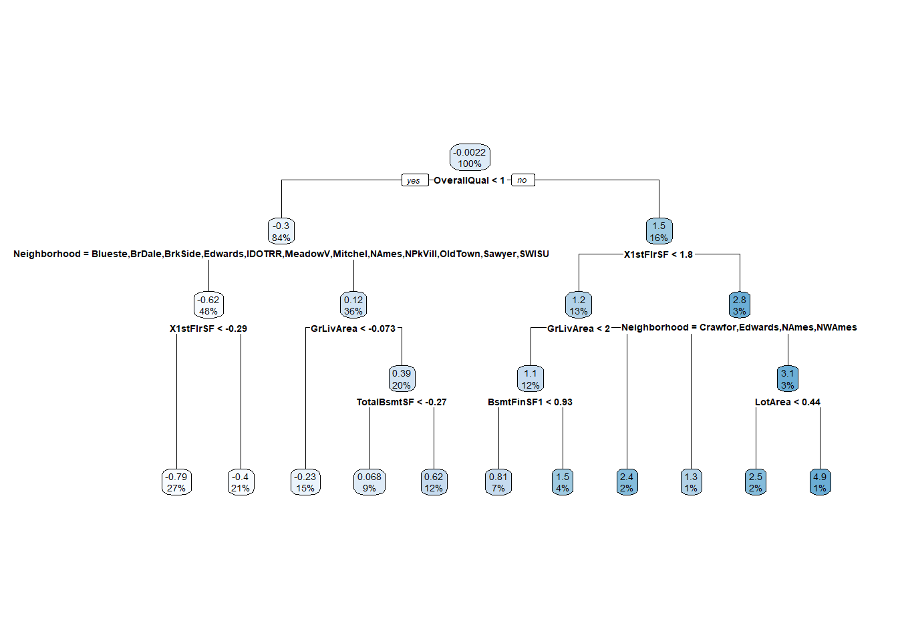
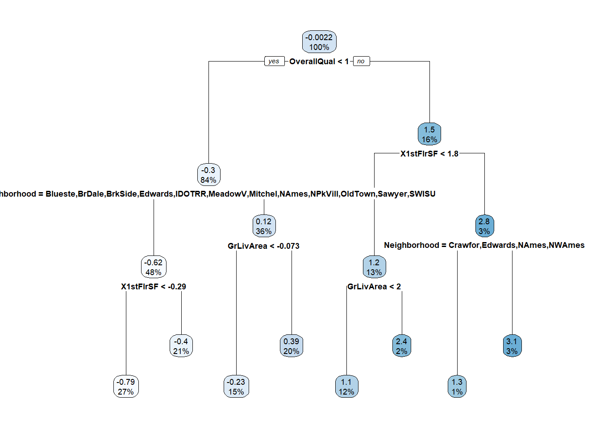
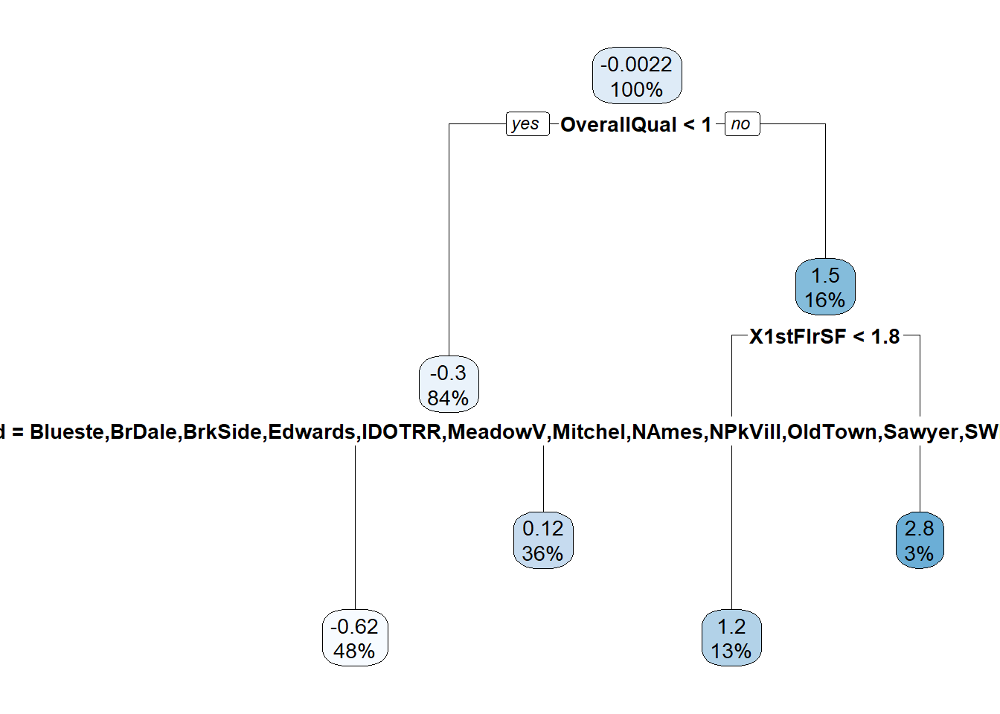
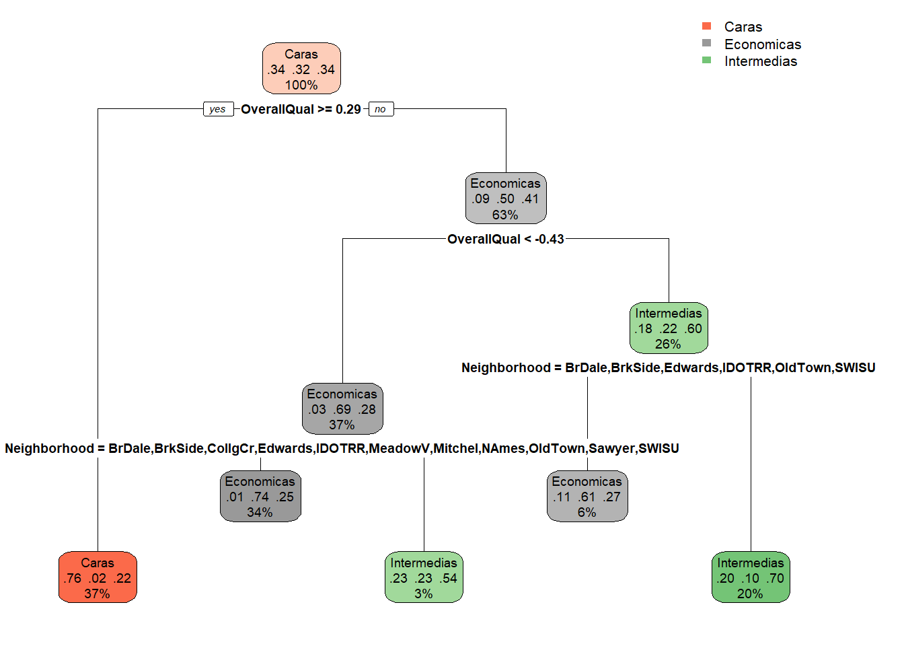
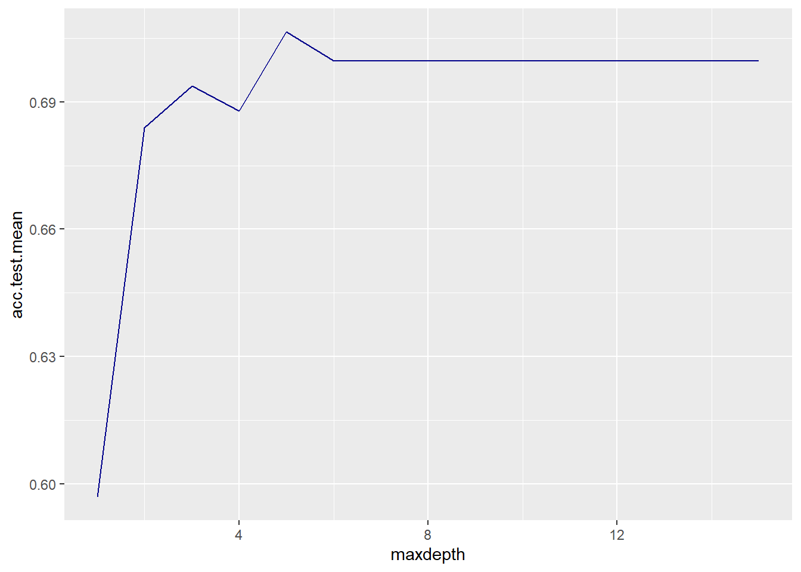

1. Lectura Dataset
datos <- read.csv("train.csv")
datos <- datos[ , !(names(datos) %in% c("Id","YrSold","MoSold","GarageYrBlt","MSSubClass","YearBuilt"))]
Cuantitativas <- c("SalePrice", "LotFrontage", "LotArea", "OverallQual", "OverallCond", "MasVnrArea", "BsmtFinSF1", "BsmtFinSF2", "BsmtUnfSF", "TotalBsmtSF", "X1stFlrSF", "X2ndFlrSF", "LowQualFinSF", "GrLivArea", "BsmtFullBath", "BsmtHalfBath", "FullBath", "HalfBath", "BedroomAbvGr", "KitchenAbvGr", "TotRmsAbvGrd", "Fireplaces", "GarageCars", "GarageArea", "WoodDeckSF", "OpenPorchSF", "EnclosedPorch", "X3SsnPorch", "ScreenPorch", "PoolArea", "MiscVal")
df_cuantitativas <- datos[Cuantitativas] datos$LotFrontage[is.na(datos$LotFrontage)] <- median(datos$LotFrontage, na.rm = TRUE)
datos$MasVnrArea[is.na(datos$MasVnrArea)] <- median(datos$MasVnrArea, na.rm = TRUE)
datos <- datos[ , !(names(datos) %in% c("Alley", "PoolQC", "Fence", "MiscFeature","FireplaceQu"))]
df_cuantitativas <- datos[Cuantitativas] #Tras los cambios de Na´s
df_norm <- mutate_if(datos, is.numeric, scale)
df_cualitativas <- df_norm[ , !(names(df_norm) %in% Cuantitativas)]
for (i in 1:ncol(df_cualitativas)) {
df_norm[,i] <- ifelse(is.na(df_norm[,i]), "Desconocido", df_norm[,i])
}
df_norm <- df_norm %>% mutate_at(colnames(df_cualitativas), function(x) as.factor(x))1.1 Dividir el dataset en train y test
set.seed(123)
porcentaje<-0.7
corte <- sample(nrow(df_norm),nrow(df_norm)*porcentaje)
train<-df_norm[corte,]
test<-df_norm[-corte,]1.2 Elaborar arbol de regresion
modelo_arbol <- rpart(SalePrice ~., data = train)
rpart.plot(modelo_arbol)
1.3 Predicciones
predicciones <- predict(modelo_arbol, newdata = test)
SSE <- sum((predicciones - test$SalePrice) ^ 2)
TSS <- sum((test$SalePrice - mean(test$SalePrice)) ^ 2)
R2 <- 1 - SSE / TSSEl R^2 de las predicciones y los valores reales fue de 0.65251 el cual es un valor bajo ya que un modelo se considera aceptable si tiene un R^2 mayor a 0.75.
1.4 Haga al menos 3 modelos más con diferentes profundidades y compare los resultados
modelo1 <- rpart(SalePrice ~., data = train, maxdepth = 3)
rpart.plot(modelo1)
predicciones <- predict(modelo1, newdata = test)
SSE <- sum((predicciones - test$SalePrice) ^ 2)
TSS <- sum((test$SalePrice - mean(test$SalePrice)) ^ 2)
R2m1 <- 1 - SSE / TSS
R2m1[1] 0.663748 modelo2 <- rpart(SalePrice ~., data = train, maxdepth = 10)
rpart.plot(modelo2) predicciones <- predict(modelo2, newdata = test)
SSE <- sum((predicciones - test$SalePrice) ^ 2)
TSS <- sum((test$SalePrice - mean(test$SalePrice)) ^ 2)
R2m2 <- 1 - SSE / TSS
R2m2[1] 0.65251 modelo3 <- rpart(SalePrice ~., data = train, maxdepth = 2)
rpart.plot(modelo3)
predicciones <- predict(modelo3, newdata = test)
SSE <- sum((predicciones - test$SalePrice) ^ 2)
TSS <- sum((test$SalePrice - mean(test$SalePrice)) ^ 2)
R2m3 <- 1 - SSE / TSS
R2m3[1] 0.5742459Vemos que de los 3 nuevos modelos el que mejor R^2 lo tiene el modelo 2 con un R^2 de 0.65251 con profundidad de 10, pero cabe destacar que el modelo de regresion lineal multivariable tiene un R^2 de 0.7, por lo que el modelo de arboles de regresion no lo hizo mejor que el modelo de regresion lineal multivariable. Además que el de profundidad 5 el de la sección 1.3 tuvo el mismo desempeño. Por lo que consideramos que podemos quedarnos con el modelo de profundidad 5. Esto se puede deber a que al momento de realizar la poda quedan pocos nodos y no se puede tener una profundiad de 10.
1.5 Compare los resultados con el modelo de regresión lineal de la hoja anterior
El R^2 de las predicciones y los valores reales fue de 0.65251 el cual es un valor muy bajo, pero cabe destacar que en la hoja de trabajo anterior el {R2} fue de 0.7 para el modelo de regresion lineal multivariable, Por lo que el modelo de arboles de regresion no lo hizo mejor que el modelo de regresion lineal multivariable. Y un resultado muy similar al modelo de regresion lineal univariable.
1.6 Creacion de nueva variable Classification
salePrices <- df_norm$SalePrice
q1 <- quantile(df_norm$SalePrice, 0.33)
q2 <- quantile(df_norm$SalePrice, 0.66)
df_norm$Classification <- sapply(df_norm$SalePrice, function(x) ifelse(x < q1, "Economicas", ifelse(x < q2, "Intermedias", "Caras")))
df_norm$Classification <- factor(df_norm$Classification)Para poder crear la nueva variable Classification, primero se obtuvieron los cuartiles de la variable SalePrice , y se crearon 3 categorias, las cuales son Economicas, Intermedias y Caras. Luego se creó una nueva variable Classification, la cual se llenó con la función sapply, la cual recorre cada valor de la variable SalePrice y dependiendo del valor de la variable SalePrice, se le asigna la categoria correspondiente. Por ultimo se convirtió la variable Classification a factor.
1.7 Creacion de nuevo modelo Arbol de clasificacion
df_norm_w_SP <- df_norm[ , !(names(df_norm) %in% c("SalePrice"))]
df_norm_w_SP <- df_norm_w_SP[ ,c("Classification","Neighborhood","OverallQual","LotFrontage","MSZoning") ]
baratas <- df_norm_w_SP[df_norm_w_SP$Classification == "Economicas",]
intermedias <- df_norm_w_SP[df_norm_w_SP$Classification == "Intermedias",]
caras <- df_norm_w_SP[df_norm_w_SP$Classification == "Caras",]
n_baratas <- nrow(baratas)
n_intermedias <- nrow(intermedias)
n_caras <- nrow(caras)
n_train_baratas <- round(n_baratas * 0.7)
n_train_intermedias <- round(n_intermedias * 0.7)
n_train_caras <- round(n_caras * 0.7)
# Muestrear el 70% de cada conjunto de casas de forma aleatoria
train_baratas <- baratas[sample(n_baratas, n_train_baratas), ]
train_intermedias <- intermedias[sample(n_intermedias, n_train_intermedias), ]
train_caras <- caras[sample(n_caras, n_train_caras), ]
# Combinar los conjuntos de entrenamiento
train2 <- rbind(train_baratas, train_intermedias, train_caras)
# Obtener los conjuntos de prueba como los elementos restantes
test2 <- df_norm_w_SP[!rownames(df_norm_w_SP) %in% rownames(train), ]
modelo4<- rpart(Classification~.,train2,method = "class",maxdepth=4)
rpart.plot(modelo4)
Debido a que tenemos 3 posibles valores a clasificar, debebos asegurarnos que el modelo tenga sufuciente datos de los 3 valores para poder predecir. Es por ello que estratificcamos la data para poder distribuirla en train y test.
1.8 Eficiencia el modelo para predecir la variable Classification
ypred <- predict(modelo4, newdata = test2)
ypred<-apply(ypred, 1, function(x) colnames(ypred)[which.max(x)])
ypred <- factor(ypred)
recall_score <- Recall(test2$Classification, ypred,positive = c("Caras","Intermedias","Economicas"))El modelo tuvo una Recall de 0.8289474, lo cual es un valor muy bueno para un modelo de clasificacion. A continuación veremos la matriz de confusion para ver que tan bien se comporta el modelo.
1.9 Eficiencia a partir de la matriz de confusion
confusionMatrix(ypred, test2$Classification)Confusion Matrix and Statistics
Reference
Prediction Caras Economicas Intermedias
Caras 126 2 35
Economicas 5 126 43
Intermedias 21 12 69
Overall Statistics
Accuracy : 0.7312
95% CI : (0.6871, 0.7721)
No Information Rate : 0.3462
P-Value [Acc > NIR] : < 2.2e-16
Kappa : 0.5972
Mcnemar's Test P-Value : 5.763e-05
Statistics by Class:
Class: Caras Class: Economicas Class: Intermedias
Sensitivity 0.8289 0.9000 0.4694
Specificity 0.8711 0.8395 0.8870
Pos Pred Value 0.7730 0.7241 0.6765
Neg Pred Value 0.9058 0.9472 0.7685
Prevalence 0.3462 0.3189 0.3349
Detection Rate 0.2870 0.2870 0.1572
Detection Prevalence 0.3713 0.3964 0.2323
Balanced Accuracy 0.8500 0.8697 0.6782Como podemos ver en la matriz de confusion el modelo tiene problemas para predecir las casas Intermedias, pero en general el modelo tiene un buen desempeño. # 1.10 Entrenar modelo por validacion cruzada
train_without_pred_variable <- subset(train2, select = -Classification)
ct <- trainControl(method = "cv",number=10, verboseIter=T)
modelo3 <- caret::train(train_without_pred_variable, train2$Classification, trControl = ct, method="rpart")+ Fold01: cp=0.03116
- Fold01: cp=0.03116
+ Fold02: cp=0.03116
- Fold02: cp=0.03116
+ Fold03: cp=0.03116
- Fold03: cp=0.03116
+ Fold04: cp=0.03116
- Fold04: cp=0.03116
+ Fold05: cp=0.03116
- Fold05: cp=0.03116
+ Fold06: cp=0.03116
- Fold06: cp=0.03116
+ Fold07: cp=0.03116
- Fold07: cp=0.03116
+ Fold08: cp=0.03116
- Fold08: cp=0.03116
+ Fold09: cp=0.03116
- Fold09: cp=0.03116
+ Fold10: cp=0.03116
- Fold10: cp=0.03116
Aggregating results
Selecting tuning parameters
Fitting cp = 0.0312 on full training set y3pred <- predict(modelo3, newdata = test)
recall_score <- Recall(test2$Classification, y3pred,positive = c("Caras","Intermedias","Economicas"))Luego del Crossvalidation los mejores paramatros para el modelo, permitieron obtener un Recall de 0.8289474, el cual es igual que el del modelo anterior. Por lo que el primero modelo ya tienen los mejores parametros para predecir la variable Classification.
1.10 Eficiencia a partir de la matriz de confusion Cross Validation
confusionMatrix(y3pred, test2$Classification)Confusion Matrix and Statistics
Reference
Prediction Caras Economicas Intermedias
Caras 126 2 35
Economicas 5 106 42
Intermedias 21 32 70
Overall Statistics
Accuracy : 0.6879
95% CI : (0.6423, 0.731)
No Information Rate : 0.3462
P-Value [Acc > NIR] : <2e-16
Kappa : 0.5318
Mcnemar's Test P-Value : 0.1051
Statistics by Class:
Class: Caras Class: Economicas Class: Intermedias
Sensitivity 0.8289 0.7571 0.4762
Specificity 0.8711 0.8428 0.8185
Pos Pred Value 0.7730 0.6928 0.5691
Neg Pred Value 0.9058 0.8811 0.7563
Prevalence 0.3462 0.3189 0.3349
Detection Rate 0.2870 0.2415 0.1595
Detection Prevalence 0.3713 0.3485 0.2802
Balanced Accuracy 0.8500 0.8000 0.6473Como podemos ver en la matriz de confusion el modelo tiene problemas para predecir las casas Intermedias, pero en general el modelo tiene un buen desempeño. Es la misma matriz de confusión pues es el mismo modelo.
1.11 Creando nuevos modelos cambiando profundidad
getParamSet("classif.rpart") Type len Def Constr Req Tunable Trafo
minsplit integer - 20 1 to Inf - TRUE -
minbucket integer - - 1 to Inf - TRUE -
cp numeric - 0.01 0 to 1 - TRUE -
maxcompete integer - 4 0 to Inf - TRUE -
maxsurrogate integer - 5 0 to Inf - TRUE -
usesurrogate discrete - 2 0,1,2 - TRUE -
surrogatestyle discrete - 0 0,1 - TRUE -
maxdepth integer - 30 1 to 30 - TRUE -
xval integer - 10 0 to Inf - FALSE -
parms untyped - - - - TRUE - clasificador <- makeClassifTask(data=train2, target = "Classification")
tablaParametros<-makeParamSet(makeDiscreteParam("maxdepth",values=1:15))
controlGrid <- makeTuneControlGrid()
cv <- makeResampleDesc("CV",iters=3L)
metrica <- acc
set.seed(456)
dt_tuneparam <- tuneParams(learner = "classif.rpart",
task = clasificador,
resampling = cv,
measures = metrica,
par.set=tablaParametros,
control=controlGrid,
show.info=T)
result_hyperparam <- generateHyperParsEffectData(dt_tuneparam, partial.dep = TRUE)
ggplot(
data = result_hyperparam$data,
aes(x = maxdepth, y=acc.test.mean)
) + geom_line(color = 'darkblue')
best_parameters = setHyperPars(
makeLearner("classif.rpart"),
par.vals = dt_tuneparam$x
)
best_model = train(best_parameters, clasificador)
# test <- df_norm[-rownames(train),]
d.tree.mlr.test <- makeClassifTask(
data=test2,
target="Classification"
)
results <- predict(best_model, task = d.tree.mlr.test)$data
confusionMatrix(results$truth, results$response)Confusion Matrix and Statistics
Reference
Prediction Caras Economicas Intermedias
Caras 126 5 21
Economicas 2 126 12
Intermedias 35 43 69
Overall Statistics
Accuracy : 0.7312
95% CI : (0.6871, 0.7721)
No Information Rate : 0.3964
P-Value [Acc > NIR] : < 2.2e-16
Kappa : 0.5972
Mcnemar's Test P-Value : 5.763e-05
Statistics by Class:
Class: Caras Class: Economicas Class: Intermedias
Sensitivity 0.7730 0.7241 0.6765
Specificity 0.9058 0.9472 0.7685
Pos Pred Value 0.8289 0.9000 0.4694
Neg Pred Value 0.8711 0.8395 0.8870
Prevalence 0.3713 0.3964 0.2323
Detection Rate 0.2870 0.2870 0.1572
Detection Prevalence 0.3462 0.3189 0.3349
Balanced Accuracy 0.8394 0.8357 0.7225El modelo que muestra un mejor desempeño es el que tiene una profundidad de 5, el cual podemos ver en la grafíca como es el punto más alto de la gráfica y luego baja y se estabilidad el desempeño del modelo. # 1.12 Utilizando Random Forest Classification
modeloRF <- randomForest(Classification~.,train2,na.action = na.omit)
ypred <- predict(modeloRF,newdata = test2)
ypred <- factor(ypred)
recall_score <- Recall(test2$Classification, ypred,positive = c("Caras","Intermedias","Economicas"))
confusionMatrix(ypred,test2$Classification)Confusion Matrix and Statistics
Reference
Prediction Caras Economicas Intermedias
Caras 135 0 14
Economicas 2 125 27
Intermedias 15 15 106
Overall Statistics
Accuracy : 0.8337
95% CI : (0.7955, 0.8673)
No Information Rate : 0.3462
P-Value [Acc > NIR] : <2e-16
Kappa : 0.7506
Mcnemar's Test P-Value : 0.1409
Statistics by Class:
Class: Caras Class: Economicas Class: Intermedias
Sensitivity 0.8882 0.8929 0.7211
Specificity 0.9512 0.9030 0.8973
Pos Pred Value 0.9060 0.8117 0.7794
Neg Pred Value 0.9414 0.9474 0.8647
Prevalence 0.3462 0.3189 0.3349
Detection Rate 0.3075 0.2847 0.2415
Detection Prevalence 0.3394 0.3508 0.3098
Balanced Accuracy 0.9197 0.8979 0.8092El modelo de RandomForest obtuvo un recall de 0.8881579 el cual es el mejor valor que se ha obtenido durante toda la hoja. Esto se puede deber a que cuenta con más arboles para poder predecir la variable Classification.